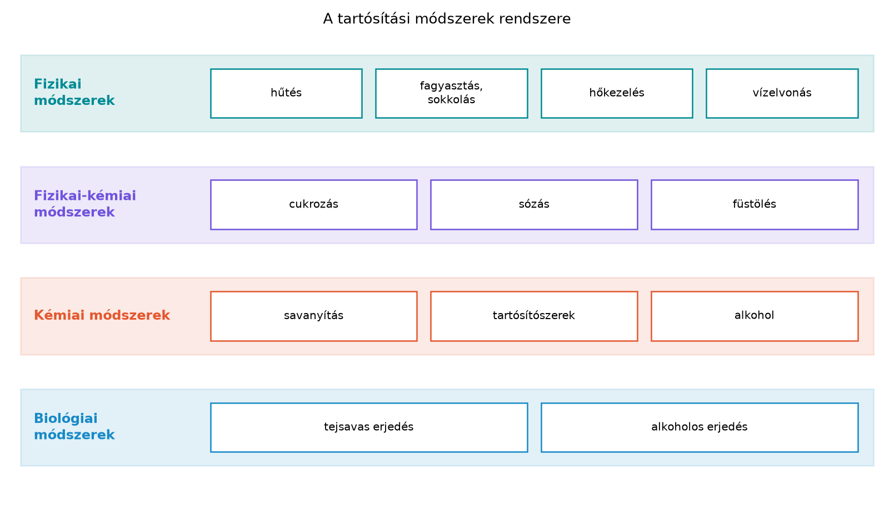

A tartósítás nem a „romlás elrejtése”, hanem az élelmiszerbiztonság és a gazdaságos termelés egyik alapfeltétele. Egy cukrászüzemben ugyanaz az eperszörp, sárgakrém vagy vajkrém más eltarthatóságot igényel, mint egy száraz linzertészta. Akkor választunk jól módszert, ha előbb megértjük: mitől romlik az adott termék, és milyen hatással csökkenthetjük a kockázatot.
A tartósítási módszereket legcélszerűbb a hatásmechanizmusuk szerint csoportosítani. Az alábbi ábra a négy nagy csoportot és a leggyakoribb cukrászati alkalmazásokat mutatja.

A ábra üzenete: nincs egyetlen „csodatartósítás”. A biztonságos eltarthatóságot legtöbbször több módszer együttesen adja: például egy lekvár tartósításában egyszerre hat a cukrozás, a hőkezelés, a savanyítás és a vízelvonás.
Definíció. A tartósítás olyan élelmiszer-technológiai művelet vagy műveletsor, amely jelentősen lassítja a mikrobiológiai, kémiai és enzimes romlást, így meghosszabbítja a termék biztonságos eltarthatósági idejét.
A tartósítás célja a cukrászatban nem csupán a hosszabb eltarthatóság. Legalább ilyen fontos, hogy a nyersanyagot a szezonon kívül is fel tudjuk használni, csökkentsük a hulladékot, és a kész termék minősége kiszámítható maradjon.
A tartósító hatás leggyakrabban az alábbi elveken alapul:
Higiénia. A tartósítás soha nem pótolja a higiéniai hibákat. Ha a nyersanyag már eleve erősen szennyezett, a tartósítás csak akkor lehet megbízható, ha a kezelés kellő intenzitású. Az induló csíraszámot ezért már a nyersanyag átvételekor és előkészítésekor alacsonyan kell tartani.
A vízaktivitás a tartósítás leghasznosabb mérőszáma. A mikroorganizmusok szaporodásához ugyanis szabad, felhasználható víz kell.
Összefüggés. A vízaktivitás az élelmiszer felületi vízgőznyomásának és a tiszta víz gőznyomásának hányadosa azonos hőmérsékleten:
A tiszta víz . Minél kisebb az , annál kevésbé használható a víz a mikrobák számára. A legtöbb kórokozó baktérium szaporodása alatt erősen lelassul; a Staphylococcus aureus azonban kb. -ig is szaporodhat, alatt a kórokozó baktériumok általában nem szaporodnak, a penészek és az ozmofil élesztők viszont még alatt (akár közeléig) is (ellenőrizendő: mikrobiológiai szakkönyvi érték és termékkategória szerint; a Mikroorganizmusok: csoportok, életfeltételek és szaporodás alfejezettel egyező érték).
| Módszercsoport | Hatásmechanizmus | Cukrászati példa | Jellemző korlát |
|---|---|---|---|
| Fizikai | hűtés, fagyasztás, hőkezelés, vízelvonás | hűtött krém, sokkolva fagyasztott mousse, pasztőrözött tojáskrém, szárított gyümölcs | láncszerű hűtés, állagváltozás, energiaigény |
| Fizikai-kémiai | ozmotikus nyomás, vízaktivitás-csökkentés | cukrozott gyümölcstöltelék, marcipán, fondán, sós teasütemény | nagy cukor- vagy sótartalom ízhatása |
| Kémiai | pH-csökkentés, antimikróbás anyagok | citromsavval savanyított zselé, alkoholos gyümölcs, engedélyezett tartósítószer | adagolási és jelölési kötelezettség |
| Biológiai | hasznos mikrobák savtermelése, kompetíció | joghurt, kefir felhasználása krémben, kovászolt alapanyag | a termék íze, állaga megváltozik |
A hideg nem pusztítja el a mikrobákat, csak lassítja a szaporodásukat. A cukrászatban a hűtött tárolás (általában 0–5 °C, jelölve) a tejes, tojásos, tejszínes készítmények alapfeltétele. A gyors hűtés azért kritikus, mert a főzött krémeknek minél hamarabb át kell esniük a veszélyes hőmérsékleti zónán (kb. 5–60 °C, jelölve).
A fagyasztás és a sokkolás a legelterjedtebb cukrászati hosszú távú tartósítás. A gyors fagyasztás kisebb jégkristályokat hoz létre, így megóvja a termék szerkezetét. A sokkoló készülék rövid idő alatt hűt le, ezért a mousse-ok, parfék és fagylaltok állaga jobb marad.
Higiénia. A fagyasztott termék hőmérsékletét a tárolás során folyamatosan, lehetőleg hőmérsékletnaplóval kell ellenőrizni. A kiolvadt fagylaltot visszafagyasztani tilos: a jégkristályok összeolvadnak, a mikrobák felszaporodhatnak, és a termék állaga is romlik.
Definíció. A sokkolás gyors, kis hőmérsékletű levegővel vagy érintkezéssel végzett fagyasztás, amelynek célja a termék maghőmérsékletének minél rövidebb idő alatti lehűtése (a pontos hőmérséklet- és időhatár gép- és termékfüggő, ellenőrizendő).
A hőkezelés a legrégebbi biztonsági módszer. Cukrászati értelemben a pasztőrözés a leggyakoribb: a tojáskrém, tejszín és fagylaltkeverék hőkezelése. A pasztőrözés nem steril, tehát a spórás túlélők miatt a hőkezelt terméket továbbra is hűtve kell tárolni. A sterilezés ezzel szemben elvileg minden élő mikroorganizmust elpusztít, ezért hosszabb, hűtés nélküli eltarthatóságot ad – a vendéglátó cukrászatban ritka, inkább tej- és konzervipari környezetben jelenik meg.
Jogszabály. Az állati eredetű, illetve hőkezelést igénylő nyersanyagoknál a hőmérséklet–idő kombinációt a hatósági útmutatók és a gyártói adatlapok szerint kell meghatározni (ellenőrizendő: 852/2004/EK szerinti gyakorlat, NÉBIH-útmutató).
A vízelvonás az értékét csökkenti. Ide tartozik a szárítás, a bepárlás és a fagyasztva szárítás. A cukrászatban a szárított gyümölcsök, a kakaópor, a tejpor és a sűrített tej a legfontosabb vízelvonással tartósított alapanyagok. A vízelvonás koncentrálja az ízt, de energiaigényes lehet, és megváltoztatja a textúrát.
A cukor vízaktivitás-csökkentő hatását használja a cukrászat leggyakrabban. A nagy cukortartalmú készítményekben a víz nagy része kötött, ezért a mikrobák kevésbé szaporodnak. A cukrozás tipikus példái:
A tartós hatáshoz általában 60–65% feletti oldható szárazanyag-tartalom szükséges, de a pontos érték függ a termék pH-jától, csomagolásától és tárolási hőmérsékletétől (ellenőrizendő). A gyakorlatban a cukrot gyakran kombináljuk savanyítással és hőkezeléssel, így kisebb cukortartalom is elegendő lehet bizonyos termékeknél.
A konyhasó ugyanilyen ozmotikus módon csökkenti a vízaktivitást. Édes cukrászati termékben ritkán használjuk tartósításra, de a sós teasüteményeknél, töltelékeknél, sajtos vagy sonkás termékeknél az ízesítés mellett tartósító hatása is van. A nagy sótartalom viszont rontja az ízélményt, ezért csak akkor alkalmazzuk, ha a termék jellege megengedi.
A füstölés során a fafüst antimikróbás és antioxidáns vegyületei, valamint a vízelvonás együttesen hat. Cukrászati alapkészítményekben alig használjuk, legfeljebb sós, húsos pékáruknál vagy különleges házi készítményeknél merül fel. A füstölt termékek engedélyezett fűst-aromákkal is ízesíthetők; ezeket jelölni kell (ellenőrizendő).
Az alacsony pH gátolja a legtöbb romlást okozó baktériumot. A gyümölcsök természetes savai mellé citromsavat, tejsavat vagy aszkorbinsavat adhatunk. A savanyítás javítja a zselék, gyümölcstöltelékek és szörpök eltarthatóságát. Fontos, hogy a savanyítás önmagában kevés lehet: a terméket hűtve kell tárolni, vagy más módszerrel kombinálni.
A tartósítószerek adalékanyagok, ezért csak az engedélyezett anyagok, élelmiszerek és maximális dózisok szerint használhatók. A cukrászatban leggyakrabban a kén-dioxid, a szorbinsav és a benzoesav merül fel.
Jogszabály. Az adalékanyagok engedélyezését és felhasználási feltételeit az 1333/2008/EK rendelet, valamint a Magyar Élelmiszerkönyv vonatkozó előírásai tartalmazzák. Az adalékanyag-felhasználás élelmiszer-kategóriánként eltérhet; a pontos dózist mindig a hatályos előírás és a gyártói adatlap alapján kell meghatározni (ellenőrizendő).
Allergén figyelmeztetés. A kén-dioxid és a szulfitok 10 mg/kg vagy 10 mg/l felett jelölendő allergénként. Ezért a szulfit tartalmú aszalt gyümölcs, gyümölcskészítmény vagy fűszerkeverék bekerülhet a technológiai lap allergénsorába (ellenőrizendő a hatályos 1169/2011/EU melléklet szerint).
A nagy etanoltartalom gátolja a mikrobákat. A cukrászati „puncsos”, rumos, likőrös töltelékek, áztatott gyümölcsök és bonbonok esetében az alkohol ízadó és tartósító szerepe egyszerre érvényesül. A tartós hatáshoz rendszerint legalább 15–20% alkohol szükséges, de a gyakorlati mennyiség termékenként eltér (ellenőrizendő). Gyermekeknek szánt termékbe alkohol nem való; ha alkoholt tartalmaz, a fogyasztói tájékoztatásban ezt figyelembe kell venni (ellenőrizendő).
A biológiai tartósítás lényege, hogy hasznos mikroorganizmusok szaporodását segítjük, és azok általuk termelt savakkal, alkohollal vagy versengéssel szorítják vissza a káros mikrobákat. A legfontosabb a tejsavas erjedés: a tejsavbaktériumok cukorból tejsavat termelnek, csökkentik a pH-t, és jellemző ízt adnak.
A cukrászatban elsősorban készen beszerzett erjesztett alapanyagokat használunk: joghurtot, kefir, savanyított gyümölcsöt, kovászolt alapanyagot. Ezeket hidegen, hűtőben kell tárolni, mert az erjedés nem áll meg teljesen. Az erjesztett krémek, pohárkrémek esetében mindig ellenőrizni kell az alapanyag savanyú–friss ízét, állagát és a csomagolás sértetlenségét.
Minden tartósítási módszer megváltoztatja valamelyest a tápanyagtartalmat és az érzékszervi jellemzőket. A cél az, hogy a változás elfogadható, sőt sokszor kívánatos legyen.
A tartósítási döntés akkor biztonságos, ha a cukor-, sav- vagy alkoholmennyiséget mérjük, nemcsak „érzésre” adagoljuk.
Számítás. Eperpéphez cukrot adunk, és bepárlással sűrítünk. Az eperpép tömege , oldható szárazanyag-tartalma . Hozzáadunk cukrot, és addig pároljuk, amíg a kész gyümölcstöltelék tömege . Mennyi lesz a késztermék közelítő refrakciós szárazanyag-tartalma?
Adott: , , , . Keresett: .
Ellenőrzés: a kapott 64,3% oldható szárazanyag már a tartós cukrozott készítmények jellemző tartományába esik (ellenőrizendő: termékspecifikus előírás szerint). ∎
Számítás. Hány kg cukrot kell hozzáadni 1,0 kg málnaléhez, ha a lé oldható szárazanyag-tartalma 8%, és azt szeretnénk, hogy a keverék oldható szárazanyag-tartalma bepárlás nélkül 60% legyen?
Adott: , , kívánt . Keresett: .
Legyen kg-ban. A szárazanyag:
A kész keverék tömege:
A kívánt koncentráció:
Ellenőrzés: a kész keverék tömege , a szárazanyag , így . ∎
Gyakorlati tanulság: a tartós cukrozott gyümölcskészítményekhez bepárlás nélkül is nagy cukormennyiség kell. A bepárlás ezért azért fontos, mert a fölösleges vizet eltávolítva csökkenthetjük a szükséges cukoradagot, és sűrűbb, jobban eltartható terméket kapunk.
Az oszlopok a két példa tömegeit mutatják. Az első példában a bepárlás 0,8 kg vizet visz el: a gyümölcs-szárazanyag (200 g) és a cukor (1600 g) változatlan, ezért az oldható szárazanyag 50,0 %-ról 64,3 %-ra nő. A második példában bepárlás nélkül 1,3 kg cukor kell a 60 %-hoz. A HTML-kiadás kalkulátorában a péptömeget, a szárazanyag-tartalmat, a cukrot, az elpárologtatott vizet és a célkoncentrációt állíthatod; a lap kiírja a bepárlás nélkül szükséges cukrot és az adott cukorhoz szükséges bepárlást.
Nem mindegy, hogy egy terméket hűteni, fagyasztani vagy cukorral tartósítani érdemes. A gyakorlati döntésnél az alábbi szempontokat vizsgáljuk:
A tartósított termék minőségét három szinten kell ellenőrizni: mikrobiológiai biztonság, kémiai összetétel és érzékszervi tulajdonság.
A tartósított termékeknél is igaz, hogy a lejárt, puffadt, sérült vagy rendellenes illatú terméket le kell selejtezni, nem szabad „visszamenteni”.
Tünet: a cukrozott gyümölcstöltelék néhány nap alatt penészes lesz. Ok: a cukorkoncentráció túl alacsony, a pH nem elég savas, vagy a teteje levegős, és a tárolás túl meleg. Megelőzés: mérjük a Brix-értéket, adjunk megfelelő savat, hűtve tároljuk, és a felületet védjük légmentes zárással.
Tünet: a fagyasztott mousse felengedtetés után vizet ereszt. Ok: a fagyasztás lassú volt, nagy jégkristályok keletkeztek, vagy a termék többször olvadt-fagyott. Megelőzés: sokkolás, egyenletes és állandó fagyasztott tárolás, legfeljebb hűtőben történő felengedtetés.
Tünet: a hőkezelt krémben megfut a tojás. Ok: túl magas hőmérséklet vagy a keverés hiánya. A krém nemcsak állaghibás, de a hőkezelés sem volt egyenletes. Megelőzés: hőfokmérés, folyamatos keverés, hirtelen lehűtés. Ha a tojás kicsapódott, a termék ételbiztonsági és minőségi szempontból is selejtezendő.
Egy cukrászüzemben nyáron nagy mennyiségű friss epret vásárolnak. A friss eper hűtve is csak néhány napig áll el. A műhely az eper egy részét azonnal felhasználja friss tortabetéthez, másik részéből cukrozott epersűrítményt készítenek, a harmadik részt pedig sokkolva lefagyasztják.
A sűrítmény készítésekor mérik a Brix-értéket, és addig párolják, amíg az oldható szárazanyag-tartalom eléri a beszállítói adatlap és a házon belüli termékspecifikáció szerinti tartományt. A kész sűrítményt forrón, tiszta üvegekbe töltik, zárják, majd hűtőkamrában tárolják. A fagyasztott epret külön hőmérsékletnaplóval ellenőrzött fagyasztóban tartják.
Amikor télen epres pohárkrémhez kell gyümölcs, a műhely a fagyasztott epret használja, és már csak annyi gyümölcsöt enged ki, amennyit aznapi termelés igényel. Így a tartósítási módszerek kombinálásával a gyümölcs szezonon kívül is biztonságosan felhasználható, és a hulladék is csökkenthető.
1. kérdés. Igaz-e, hogy a hűtés elpusztítja a
kórokozó baktériumokat?
2. kérdés. Miért csökkenti a cukor a mikroorganizmusok
szaporodását?
3. kérdés. Miért nem szabad a kiolvadt fagylaltot
visszafagyasztani?
4. kérdés. Melyik tartósítási módszer illik legjobban
egy tojásos főzött krémhez?
5. kérdés. Mi a vízaktivitás jele és mit jelent az
érték?
6. kérdés. Melyik adalékanyag lehet allergén, ha
szulfit tartalmú aszalt gyümölcsöt használunk?
1. feladat (A). Sorold be az alábbi módszereket:
fagyasztás, cukrozás, savanyítás, pasztőrözés, tejsavas erjedés. Melyik
fizikai, melyik fizikai-kémiai, kémiai vagy biológiai?
2. feladat (A). Mi a különbség a pasztőrözés és a
sterilezés között a mikroorganizmusok szempontjából?
3. feladat (B). Hány kg cukrot kell bepárlás nélkül
hozzáadni 2,5 kg sárgabarackpéphez (12% oldható szárazanyag), hogy a
keverék 58%-os legyen?
4. feladat (B). Egy gyümölcstöltelék készítésekor 1,8
kg eperpépet (10% szárazanyag) 0,9 kg cukorral keverünk, majd 2,1 kg
késztermékké párolunk. Számítsd ki a késztermék
szárazanyag-tartalmát.
5. feladat (C). Egy műhely saját eperszörpöt készít, de
a késztermék két hét után erjedni kezd. Milyen tartósítási tényezőket
mérnél meg, és milyen hibákat keresnél?
6. feladat (D). Válassz ki egy cukrászati készítményt,
amelyet szezonálisan gyümölccsel készítesz. Készítsd el a rövid
tartósítási tervét: nyersanyag, tárolási hőfok, tartósítási módszer,
ellenőrzés, várható eltarthatóság (jelölve).
Önellenőrzés – válaszok
1. feladat. Fizikai: fagyasztás, pasztőrözés. Fizikai-kémiai: cukrozás. Kémiai: savanyítás. Biológiai: tejsavas erjedés.
2. feladat. A pasztőrözés elpusztítja a kórokozók zömét, de a spórák egy része túlélhet, ezért a termék hűtést igényel. A sterilezés célja minden életképes mikroba elpusztítása, így a termék hosszabb ideig hűtés nélkül is eltartható.
3. feladat. Adott: , , cél . Keressük -t.
Ellenőrzés: késztermék , szárazanyag ; . ∎
4. feladat. Adott: , , , . Szárazanyag: . Koncentráció: . Ez még nem feltétlenül elegendő, ezért hűtve tárolandó vagy tovább sűrítendő.
5. feladat. Mérné a Brix-értéket, a pH-t, a záródást és a tárolási hőmérsékletet. Keresné, hogy a cukorkoncentráció nem érte-e el a kívánt tartományt, nem savas-e eléggé a közeg, nem sérült-e a palackozás, illetve nem tárolták-e túl melegen. Ha az erjedés beindult, a terméket le kell selejtezni.
6. feladat. Például epres tortabetéthez: friss eper, hűtött tárolás 0–5 °C, azonnali feldolgozás. Hosszabb távra: sokkolva fagyasztás, légmentes csomagolás, hőmérsékletnapló. Ellenőrzés: maghőmérséklet, érzékszervi vizsgálat. Várható eltarthatóság: frissen 1–2 nap hűtve, fagyasztva több hónap a gyártói adatlap és a hatályos útmutató szerint (ellenőrizendő).
A tartósítás az élelmiszer romlásának lassítása és a biztonságos eltarthatóság meghosszabbítása. A módszerek hatásmechanizmusuk szerint fizikaiak (hűtés, fagyasztás, sokkolás, hőkezelés, vízelvonás), fizikai-kémiaiak (cukrozás, sózás, füstölés), kémiaiak (savanyítás, tartósítószerek, alkohol) vagy biológiaiak (tejsavas erjedés). A vízaktivitás mérőszáma az élelmiszerben hasznosítható víz mennyiségét mutatja: a tiszta víz , a csökkentett vízaktivitás gátolja a mikrobák szaporodását. A cukrászati tartósítás leggyakoribb példái a hűtött, fagyasztott, pasztőrözött, cukrozott, savanyított és alkoholos készítmények. Minden tartósítás megváltoztatja a tápanyagtartalmat és az érzékszervi tulajdonságokat, ezért a módszert a termék víztartalmához, veszélyességéhez, ízéhez és tárolási feltételéhez kell illeszteni. A tartósítószerek adalékanyagok, ezért csak engedélyezett módon, ellenőrzött dózisban és jelölve használhatók. A kén-dioxid allergén lehet. A kiolvadt fagylaltot visszafagyasztani tilos. Ezt a tartósítási rendszert használjuk a Gyümölcsök előkészítése, gyorsfagyasztás és vízelvonás, a Tartós cukrászati készítmények: trüffelkrém, mártás, csomagolás és a Fagylaltkeverék-számítás: szárazanyag, cukor, zsír, édesség és fagyáspont alfejezetben is.
A fejezet az alábbi forrástípusokra támaszkodik, amelyeket a kiadás előtt célzottan ellenőrizni kell:
Ellenőrzendőpontok: a hűtés veszélyes zónájának pontos határai, a pasztőrözési hőmérséklet-idő kombináció, a tartós cukrozott készítmények minimális szárazanyag-tartalma, a szulfit allergénjelölési határérték és az alkoholtartalomra vonatkozó tájékoztatási követelmények.